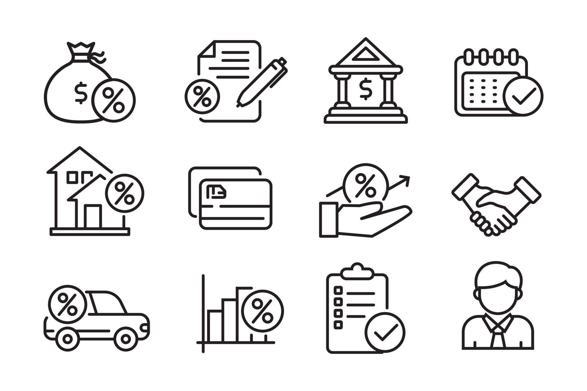
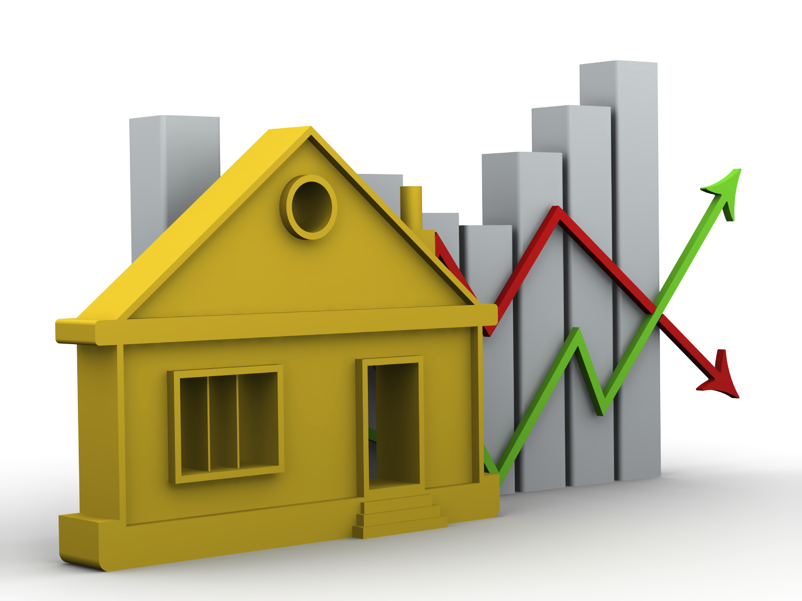
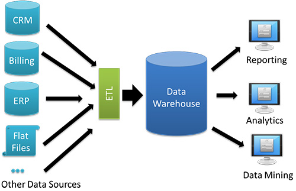
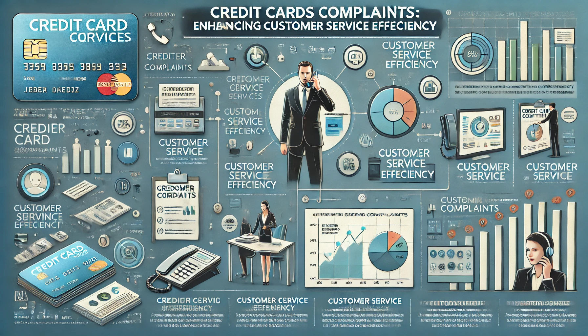

Domain
Data Scientist · Machine Learning Engineer · Researcher
I am a Data Scientist with more than five years of experience helping organizations derive actionable insights from complex data. My work spans three core actions: designing and automating data pipelines for KPI measurement; building and deploying predictive models to support strategic decision-making; and building interactive dashboards to monitor business metrics in real time.
Expertise
Domain
Domain
Domain

Binary classification model predicting loan eligibility for SYL Bank (Australia), automating manual approval using credit score, income, and debt features.
Tools: Python, XGBoost, Random Forest, scikit-learn, SMOTE

Regression model estimating residential property values based on structural features, location, and market trends with a deployable web interface.
Tools: Python, Random Forest, Gradient Boosting, Streamlit
Classification model identifying customers likely to close their accounts, enabling proactive retention strategies.
Tools: Python, LightGBM, SHAP, Power BI
Domain

Cross-channel campaign performance analysis with ROI calculations, audience segmentation, and insights for budget optimization.
Tools: Python, SQL, Power BI, Google Analytics

RFM analysis and K-Means clustering to identify high-value customer segments for targeted marketing and retention programs.
Tools: Python, scikit-learn, Tableau, SQL
Real-time sentiment analysis of brand mentions using NLP transformers, with automated alerting on negative sentiment spikes.
Tools: Python, HuggingFace Transformers, Streamlit
Visualization
Research
Writing
Machine Learning
Medium · Data Science
Remote Sensing
Medium · Data Science
Healthcare AI
Medium · Data Science
Social proof
"Noé delivered an exceptionally accurate predictive model for our clinical data. His ability to translate complex ML concepts into actionable insights for our medical team was remarkable."
"Working with Noé on our Power BI dashboards was a game-changer. The dashboards he built are now used daily across our entire analytics team to drive key decisions."
"Noé's expertise in geospatial data analysis helped us identify invasive species patterns we had missed for years. Highly recommended for any research project."
What I offer
Design, develop, and maintain interactive and insightful dashboards.
Advanced statistical analyses to uncover patterns and trends.
Build and deploy machine learning-powered web applications.
Workshops and consulting to enhance data literacy in your team.
Tailored solutions to address specific business challenges.
Data analysis support for academic research and peer-reviewed publications.
.webp)
.webp)
.webp)
.webp)